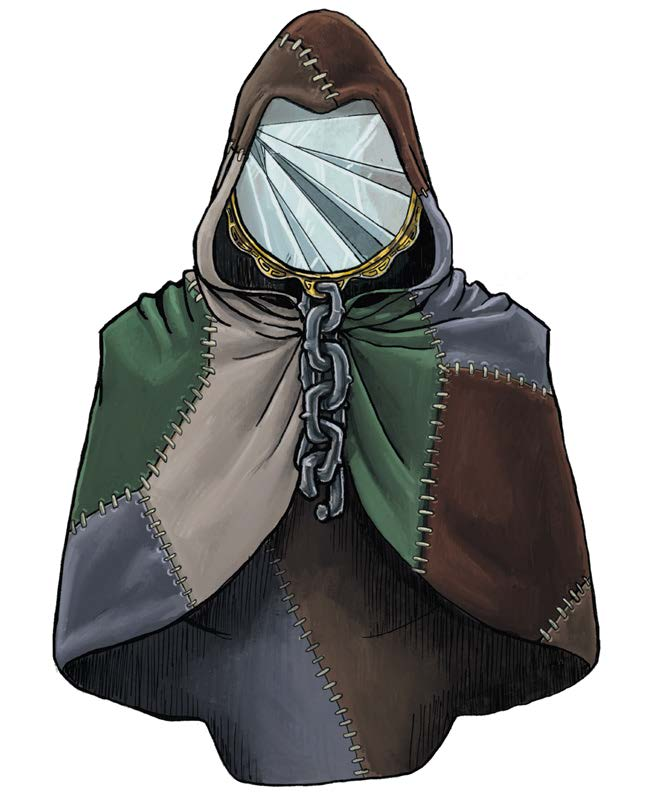

旅者 The Traveler
博德雷将我们聚集在一起，奥林的律法为我们的生活带来秩序。杜·哈拉向我们展示荣誉之路，杜·顿恩给予我们勇气。但旅者企图摧毁这一切。祂漫游世界，隐藏在一百张不同的面孔之后。他们提供馈赠，诱惑你去冒险、偏离正途。祂只有一个目标：混乱。尝试新事物！听这个秘密！抓住这个风险机遇！这些都是旅者的赠礼，但全都通向绝望。相信传统，信任你认识的邻居，而非路上的陌生人。当心旅者的礼物。
——哈拉斯·莫兰Halas Molan，沃奥特的大祭司
"别和陌生人说话。" "别尝试任何新事物。"祭祀们教导你们要珍惜眼前的生活，规避任何可能的风险。是啊，牧场上的绵羊过着绝对安稳、一成不变的生活……直到牧羊人饥肠辘辘！没错，旅者会粉碎你熟悉的生活，而正是在那片混沌中，你将寻得自己的道路，认清真实的自我。唯有离开安逸的巢穴，才能窥见世间所有的奇迹。若你只求太平无事，不如现在就爬进坟墓。但若你想体验生命的全部馈赠——绝望的时刻固然会有，却也有你想象不到的极致欢欣——那就拥抱旅者的礼物吧！
萨恩的机会Chance of Sharn
（机会Chance(混乱中立，变形怪，导师12/游荡者2)）
五根骨头缚系在一起——这是黑暗六神最古老、最简单的象征之一，在卓姆的无数神龛中皆可见到。但为何是五根，而非六根？因为旅者无法被束缚于一地一形——祂正是墙上的那片空白，因其缺席而被认知。
我们的生命在秩序与混沌间维持着平衡，而旅者——这位变革之主——总试图将我们推下悬崖。在天命诸神与黑暗六神的神话中，旅者从不以“旅者”本身的形态现身。祂时而是为杜·顿恩铸剑的铁匠，却让剑在初战中碎裂；时而是在奥林最需要典籍时将其盗走的窃贼；时而是揭露杜·阿祖尔背叛行径的士兵。旅者在每个故事中都顶着不同的名号与面容，但我们从其行径带来的冲击中，总能辨认出祂的真身。旅者的礼物有时助你高升，有时则将你毁灭。唯有无休止的混沌与变革恒常不变——它们粉碎你生活的根基，迫使你寻得新的前路。
在天命诸神的普遍传统中，旅者被描绘成一个以不幸、混乱与困惑为乐的恶意存在。好运是欧拉卓的恩赐，而当事物在最糟糕的时刻分崩离析时，那便是旅者之手在作祟。在这些传说里，旅者企图动摇一切安稳，摧毁所有根基。任何陌生人都可能是旅者，意图将你推向毁灭。相反地，旅者的追随者则主张：旅者所带来的变革实为一种积极的力量——混乱在激发创新与启示，挑战传统并摒弃那些已完成使命的旧俗之中至关重要。与黑暗六神中的大多神明一样，旅者关注个体福祉胜过体制稳定：祂助你寻得自己的道路，而非被传统束缚。当你在路上遇见一位陌生人，你心中所涌起的，是对潜在威胁的恐惧，还是结识新知的欣喜？
本节在探讨普通封臣对旅者的普遍认知之外，介绍另外两个相关教派。卓姆地区的主流信仰——卡萨克信条Cazhaak：将旅者所代表的混沌尊为一种挑战传统、推动族群与文明演进的动力；而旅者最虔诚的追随者“婕斯之子Children
of Jes“，则是一群流浪的幻身灵，他们将旅者视为自身的指引者与灵感之源。关于这些幻身灵的更多细节，可参阅《探秘艾伯伦》第二章。
混乱与机会Chaos
and Change
旅者的领域触及众多其他诸神的神职。如同奥林与阴影，旅者是知识的源泉之一；与欧拉卓和嘲弄一样，旅者是倚仗诡诈与狡黠之人的庇护者；又如昂纳塔，祂能赋予工匠以灵感。但无论畏惧还是敬奉旅者之人，在这一点上都不谋而合：无论旅者赐予何种赠礼，最终都必将引向混沌。若旅者赐你知识，那是因为这启示将迫使你重新审视所知的一切；若祂助你行骗，那是因为你的作为将为你或他人的生命带来混乱与危机。当昂纳塔教导铸剑师锻造更精良的利剑时，旅者或许会向她展示如何制造炸弹——从而彻底改变战争的面貌。旅者并非为满足你的贪婪或助你实现抱负而来；相反，祂会将你置于那些你从未想尝试的道路。祂或许会赐你好运，但当你向旅者祈求之时，便已邀请了“不可预料”踏入你的生命。
行于己路Walking Your own Path
在皮林神话中，旅者总试图诱使你偏离安稳之道。但在杰斯之子的传统里，当你选择未知之路时，旅者却是与你并肩同行的向导——因为唯有行走属于自己的道路，你才能寻得真我。"走自己的路"与"寻求自我"，是尊崇旅者之人的重要信条。"走自己的路"既可字面理解，亦可视作隐喻：一方面，这信仰鼓励游牧式生活，拥抱旅途中的混沌，主动追寻新的地域与体验；更进一步而言，它是一条简单的指引：不要让他人掌控你的人生，相信你的直觉不要畏惧未知。
“寻求自我”这一信条同样可从多重层面加以践行：既要认清自身的长处与热忱所在，更要超越于此，明确你想成为怎样的人并为之付诸实践。尽管这对幻身灵而言更易实现，但在艾伯伦这个充满魔法的世界里，任何人都能将其化为现实。“易容术”与“变身术”可令你暂时扮演不同身份，而变化学派某些特殊版本的法术与仪式，更能让你永久改变外貌或性别的任何特征。旅者的信徒被告诫：除却真我，不要被任何他人的期待所束缚。
因此，当封臣们将旅者视为企图将你拖入混沌的恶意存在而心怀畏惧时，杰斯之子与卡扎克信仰的追随者却将旅者看作跃入未知或挑战传统时守候在旁的同行者。追随旅者之人通常选择以下三条道路之一。
诡术士trickster
诡术士为混乱之乐而播撒混乱，深信自己在制造麻烦时能得到旅者的庇佑。有些诡术士冲动狂放，在所到之处引发骚乱但很少造成大祸；另一些人谨慎算计，舍弃掉琐碎的小纠纷，专门整能动城市或机构的大活。话虽如此，多数诡术士除混乱本身外并无长远图谋；他们的目的就是点燃火焰，至于火势能蔓延多远、将吞噬何物，就全数丢给命运之手。诡术士主要分布于封臣之中；因为该信仰对旅者持纯粹负面看法，追随此道者就拥抱了这种毁灭性的解读。
导师Mentors
导师制造混乱，是因为他们相信这会产生积极的结果。与诡术士相比，导师很少冲动行事，更倾向于带着明确目标制造混乱——无论是要考验某个体制、某条法律，还是某个特定个体。导师就是那位给杜·顿恩有瑕疵的剑的铁匠，因为他们知道这位战神过于依赖武器，需要学会没有剑也能战斗的道理。当然，导师会决定你需要学习什么课题，但没人保证你能在随之而来的冲突中幸存。导师也能专注于指导处于危机时刻的人；正如他们相信旅者在混乱时刻与他们同在，他们也为他人承担起这个角色，试图引导向积极的结果。这种导师认为传统需要受到挑战，人们需要经受考验，但最终他们希望人们学到有益的教训，而不是迷失于混沌。
漫游者Wanderers
漫游者遵循自己的道路，追求持续变化与崭新体验的人生。他们无意在他人的生活里制造混乱——无论是出于恶意还是善意。相反，他们拥抱自身生活中的混乱，力求摆脱束缚，避免陷入任何消极的模式。
旅者的多重面孔
Many Faces of the Traveler
许多旅者追随者都选择漫游者之道，过着游牧式生活，行走于自己的道路，鲜少关注周遭的广阔世界。然而，正如旅者本身激发混沌，追随旅者的人的信仰也千差万别。以下是一些例子。
千面密阁Cabinet of Faces
这个忠于旅者的同盟组织遵循着导师之道，以或宏大或细微的方式主动播撒混乱。千面秘阁的成员多为幻形灵，因此其确切人数无从追踪，作为DM的您可自行决定该组织的规模与资源深度——或许每位城市都潜伏着身居要职的成员，亦或整个组织仅有十二位成员，而每人都扮演着上百种身份。
千面秘阁的成员正如神话中的旅者那般行事，通过种种举动搅动混沌：可能是一次馈赠，一场窃取，或一则启示。设想以下情境：
小队遭遇伏击，在袭击者即将逃脱之际，玩家们通过其服饰或其他装束辨认出与当地某个组织的关联。在对抗该组织的过程中，他们撼动了一个腐朽而根深蒂固的体制……却始终未能再遭遇那个最初的袭击者。
一位学者携证据突然造访，证明某位角色对贵族头衔拥有意想不到的继承权……但若他们执意追究，将引发何等混乱？
小队被一队守卫拦截，对方声称早前有角色被亲眼目睹实施犯罪行为——玩家们会选择厘清真相，还是因慌乱而越陷越深？
在所有这些事例中，都是由某个个体掀起了一系列混乱事件的序幕。无论是刺客、学者还是罪犯，他们本身对事件的结果并无利害关系——仅仅是将玩家角色置于充满挑战的境地，或是借小队之力去撼动某个强大的体制或传统。
千面密阁的关键在于，他们的行动总会催生危机。这可能是个人层面的危机——比如"我是否该主张我的世袭继承权？"；也可能是足以颠覆一个龙纹家族、一位高阶祭司甚至整个国家的一系列事件。尽管这些行动因常以腐败体制为目标而在客观上显得高尚，但千面秘阁同样会挑战良性的制度与传统——既为确认它们是否仍在履行使命，也为迫使它们进化。他们的目标并非"行善"，而是制造混沌，并期盼混沌最终能结出善果。
卡尼斯邪教Cannith Cults
昂纳塔通常被视作卡尼斯家族的守护神。虽然祂确实会启迪工匠并助其探寻更精妙的技艺，但这个过程缓慢而审慎。昂纳塔仿佛遵循着某种最高准则：这位锻造之主在世间准备好之前，绝不会透露任何超前的理念。然而，卡尼斯家族中另有一些人认为，奥术发展不应受任何限制——无论是神术还是其他约束。那些祈求旅者启示的奇械师与工匠，则致力于研究可能改变世界的理念。当哀伤之日震撼五国后，一种流行推测认为这场灾难正是卡尼斯家族中旅者教徒所致——他们当时正在打造一件足以彻底改变现代战争形态的武器，最终却失控酿成惨剧。毋庸置疑，哀伤之日迫使整个世界发生变革——但也昭示了干涉未知力量可能带来的巨大危险。另有说法称艾伦·d’卡尼斯其实是旅者信徒，正是这位变革之主为他指明了赋予战俑感知能力的途径……这项发明迫使所有人重新审视生命的本质与造物的权利。
冒险小队可能遭遇的，或是一个怀揣宏大构想却无法掌控自身造物的卡尼斯空想家，或是家族内部致力于研究某种将从根本上颠覆现有文明体系的秘密同盟。无论他们追求的是稳定可靠的复活术，还是成本低廉的传送技术，其部分动机正在于探索这项发现可能引发的混沌，以及它重塑世界的无数可能。
卡尼斯邪教是尊崇旅者的奇械师群体的典型范例——他们极易藏身于家族体系内部，但事实上任何奇械师都可能从旅者处寻求灵感。其风险在于：卡尼斯家族始终致力于遏制任何可能威胁其垄断地位的突破性进展。在家族体系之内，你还可能尝试将真实研究隐匿于合法项目之中；而作为独立研究者，你既无家族人脉庇护，也不清楚内部规则。但一位独立奇械师过开创了一种革命性仪式，确实可能动摇家族既有的统治地位……而颠覆既有强权正是旅者的核心目标之一。
独立行动者independent Operators
任何制造混乱或危机之人都能被视为旅者的代理人，但有些信徒以更隐晦的方式践行旅者的意志。萨恩的暴君会在行动中虽然不及千面密阁影响深远，却同样能通过精妙手段挑战城市的体制——无论是激化达斯克与波罗马家族的冲突，还是在遍布全城的谍报与外交活动中暗中作梗。与此同时，一位名为机会的旅者祭司在萨恩经营着一家赌场，鼓励顾客冒险也主持各种离奇赌约。
使用旅者Using
the Traveler
旅者是唯一常被描绘为漫游世间的天命神。然而，这种解读其实是对真相的曲解。旅者是路上邂逅的陌客，是点燃火焰的火花。祂在每个故事中幻化不同形貌，但我们能从其行径引发的后果辨认出旅者的本质。你固然可将其归因于某个独立神祇的作为，但这亦可视为众多凡人共同造就的轨迹。杰斯之子相信：当你践行导师之道时，旅者正借你之躯行动——彼时，你即是旅者。同样地，众多强大的存在——从至高妖精到传奇的索拉·科伦——都曾披上旅者的斗篷，或因其作为而被世人视作旅者的化身。
玩家角色或许会遇到自称旅者的存在——但对方究竟是真正的神祇？是披着神祇外衣的至高妖精或天界生物？或仅仅是位幻身灵祭司？他们可能出自旅者不同面相中所述的某个教派，也可能是独立行动者。无论其来历如何，在引入旅者信徒时，请斟酌其属于漫游者、导师还是诡术士……他们漫游世界是为自身修行而不愿扰乱他人？还是相信自己的行动能结出善果？又或者，他们点燃火焰仅仅是为了目睹万物焚毁？
玩家角色Player
Characters
追随旅者，你拥抱动荡与混沌作为积极工具。除非你是个诡术士，你不会无端制造麻烦。但你信奉把握机遇、拥抱未知，并推动他人迈出同样的步伐。
一个紧要问题在于你如何与队伍其他成员互动。一个不计后果播撒混乱、无所顾忌的诡术士或许能为你带来乐趣，但其他冒险者为何要与你同行（除非他们认同你的理念）？队友们又将如何看待你角色施加于他们的行动？因此，导师或漫游者通常更适合玩家角色。
漫游者Wanderer：作为漫游者，你本质上是个自由不羁的灵魂。你可能会鼓励队伍不断前行、质疑权威、避免束缚，但你的核心关注点在于自身的旅程，而非给他人制造混乱。游侠可以轻松遵循漫游者之道，致力于臻善自身形态的幻身灵武僧亦是如此。
导师Mentor：作为导师，你或许会致力于颠覆腐败的体系与机构：挑战龙纹家族、揭露当地行会或神殿的腐败、引导无辜者在混乱时期寻找光明前路。你也可能接收到隐秘的神圣指引，被引向需要帮助之人或亟待撼动的体制。可能你尚未窥见事件全貌，但你知道自己的使命就是扳倒萨恩的匕首岗哨驻军训练场……你准备好肩负这份重任了吗？
(注:
原文为Daggerwatch Garrison, Daggerwatch 匕首岗哨是杜拉的一个城区，有驻军)
诡术士Trickster：吟游诗人、盗贼与江湖骗子最适合诡术士。专精幻术或附魔的术士也可能将自身天赋归源于旅者。与至高妖精缔结契约的邪术士或会认定旅者即是其宗主……但他们侍奉的究竟是这位诸神，还是某个披着旅者外衣的至高妖精？
祭司Priest。若你的角色不仅尊崇旅者但也担任着神职，您可选择扮演诡术领域或知识领域的牧师——这取决于您对角色的定位：您更侧重主动施以欺瞒，还是致力于揭露隐秘？另一种选择是扮演致力于创造颠覆性造物的奇械师或锻造领域牧师。没有特别契合旅者的圣武士誓约，但只要您在践行旅者的目标，任何誓约皆可遵从：若你是位游者，你可以选择古贤之誓；若志在摧毁腐败的系统，你可能选择复仇之誓；若主要致力于引导众生度过混沌危机，你可能可遵循奉献之誓。但请注意，无需成为神术施法者亦可坚信身负神圣使命，甚至承担祭司神职。
与其他信仰的祭司常使用特定圣徽来标识身份不同，旅者并无统一的圣徽象征——若身着制式服饰或携带宣告信仰的信物，便难以成为悄无声息的混沌使者。因此，旅者的圣徽往往是对每位祭司具有个人意义的重要物件——每位祭司都携带着承载故事的物品。这些圣徽可代代相传：杰斯之子常用的标志是一件历经数代缝补修复的旅者斗篷。如果圣徽遗失，旅者的仆从只需完成一次长休即可将新物品祝圣为圣徽——但该物品同样必须承载着属于祭司的故事与意义。（若你使用非传统圣徽，甚至扮演完全不使用圣徽的职业，可将任何法器或材料描述为具有神圣意义的物品；只需遵循该物品在施法时的规则要求：例如施法时需触摸该物品。）